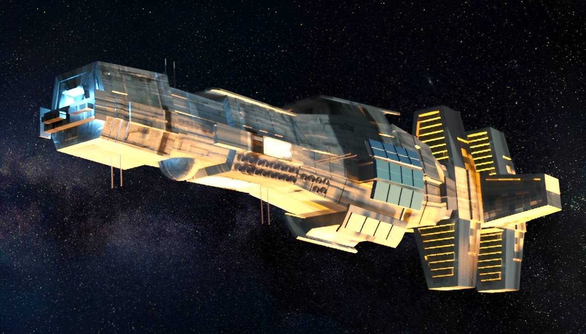

Released editions and builds of Citadel maintained and documented by Infiniconcept, from the original Amiga discs to modern remasters and WebGL.

Citadel - Original version
Citadel has been developed by Virtual Design between February 1994 and May 1995. The main team consisted of 4 people (1 developer, 2 graphics designers, 1 musician) although several other people were involved part time, such as level designers and testers.
It has been released in 1995 in Poland by Arrakis Software as Cytadela, and in the UK and Germany by Black Legend as Citadel. The three versions had different locales in parts of the game, and the German version had some of the graphics modified (humans replaced by robots) because of regulatory limitations related to depicting shooting of human beings in video games at the time.
 The Citadel had strong 3D FPS competition on the Amiga at that time, with titles such as Breathless, Fears, Aliend Breed 3D, Gloom or Behind the Iron Gate released around the same year. However, Citadel was one of the few games of the type that targetted not just the A1200 and higher end models but also the A500, with 1MB of memory required to play. It also suports a large number of in-game objects (enemies, items, different sized objects, partially transparent multi-layered walls etc.) without a significant performance penalty. It has been written entirely in assembler to make the most out of the Amiga hardware and was at the time the most graphically advanced 3D game for the A500, although due to performance limitations practically playable only in a very small window.
The Citadel had strong 3D FPS competition on the Amiga at that time, with titles such as Breathless, Fears, Aliend Breed 3D, Gloom or Behind the Iron Gate released around the same year. However, Citadel was one of the few games of the type that targetted not just the A1200 and higher end models but also the A500, with 1MB of memory required to play. It also suports a large number of in-game objects (enemies, items, different sized objects, partially transparent multi-layered walls etc.) without a significant performance penalty. It has been written entirely in assembler to make the most out of the Amiga hardware and was at the time the most graphically advanced 3D game for the A500, although due to performance limitations practically playable only in a very small window.
There were 3 releases of the game, each new version replacing the previous one in distribution:
- 1.0 - The original release
- 1.1 - Bugfix release
- 1.2 - HD installer release
The Citadel sold about 1500-1600 copies in Poland, and an undisclosed number in the UK and Germany since Black Legend closed down in 1996 and Arrakis Software not long after, due to the decline of the Amiga market.
All files below are provided under the GNU GPLv3 License. Private use and distribution is allowed and free, any commercial use should be agreed with the authors.
Downloads
| File information | Link |
|---|---|
| Original 5 disks (Polish) |
Local download My Abandonware PPA The Old Computer |
| Original 5 disks (English) |
Local download My Abandonware PPA The Old Computer |
| WHDLoad full version (English) | Local download WHDLoad site |
| WHDLoad HD installer (Polish) | Local download PPA |
| WHDLoad HD installer (English) | Local download |
| Disk 1 cracked (Polish) | Local download |
| Demo version - one level (English) | Local download |
| Level Editor (Polish) | Local download |
| Full manual pdf (Polish) |
Local download Amiga Hall of Light |
| Full manual pdf (English) |
Local download Amiga Hall of Light |
| Draft manual txt (Polish) | Local download |
| Copy protection codes | Local download PPA |
| Cheat codes | Local download PPA |
| Maps | Local download |
| Music (mod files) | Local download My Abandonware |
| Source code | Github |
| Reviews (UK and US) |
Amiga Magazine Rack Amiga Hall of Light Amiga Reviews |
| Reviews (Polish) |
Top Secret #42 1995 (Internet Archive) Swiat Gier Komputerowych #4 1996 (Zlote Dyski) PPA |
{kind=link}

Citadel Remonstered
In February 2022 part of the original Virtual Design team, Pawel and Artur, decided to give the almost 30 years old game a makeover.
 This was driven largely by problems on fast Amigas and emulators, on which the game was unplayable due to poor handling of speed scaling - it had originally not been properly tested beyond A3000 because of difficult access to high end Amigas in the 1990s. Another incentive was the prospect of releasing Citatel on the A500 Mini, which simply required some fixes and changes to add contorller support. Because some of the code and assets had been lost in time, the way forward was to update and replace the main part of the game (the "engine") using WhdLoad. The English Citadel version was used as the starting point. The project finally grew from the originally planned 1-2 weeks to over a month. The final 1.30 release 1_3_22_03_30_02, on the 30th of March 2022 included a major performance overhaul of the engine, level and graphics, and a number of other fixes:
This was driven largely by problems on fast Amigas and emulators, on which the game was unplayable due to poor handling of speed scaling - it had originally not been properly tested beyond A3000 because of difficult access to high end Amigas in the 1990s. Another incentive was the prospect of releasing Citatel on the A500 Mini, which simply required some fixes and changes to add contorller support. Because some of the code and assets had been lost in time, the way forward was to update and replace the main part of the game (the "engine") using WhdLoad. The English Citadel version was used as the starting point. The project finally grew from the originally planned 1-2 weeks to over a month. The final 1.30 release 1_3_22_03_30_02, on the 30th of March 2022 included a major performance overhaul of the engine, level and graphics, and a number of other fixes:
- The 3D rendering engine has been optimised as much as possible within the current game architecture, resulting in a 4-6x performance increase
- Gameplay has been improved by implementing additional usability features such as WASD+mouse simultaneous control, CD32 type controller support, auto-weapon change etc.
- Level graphics has been significantly updated including textures and enemies
- Level maps have been corrected or re-designed for better playing experience, fast-paths added in huge levels
- Difficulty has been re-balanced
- FPS counter added
- Crosshairs added
- Speed issues fixed on fast machines: 030/040/060, overclocked CPUs, PiStorm, Vampire, Warp1260 and other accelerators, and fast emulators. Speed capped to 50fps.
- Manual has been re-written with an extended back-story and updated content
In the videos showcasing performance, linked above, the top counter is FPS and the bottom is the equivalent in frames used to render a scene on a 50KHz PAL system. On a stock A1200 with an additional 1MB of Fast RAM, which was the main optimisation target, this version is perfectly playable at around 12fps (18-20 without textured floors and ceilings) in a 1x1 pixel 160x128 window.
 The original 3D engine has been optimised, but did not fundamentally change. It is still quite capable and some tricks like those in this video allow to achieve a really nice feel of varying vertical positions of floors and ceilings. This has however not been used in the original level design, although lowered ceilings are included in some places in the Remonstered version.
The original 3D engine has been optimised, but did not fundamentally change. It is still quite capable and some tricks like those in this video allow to achieve a really nice feel of varying vertical positions of floors and ceilings. This has however not been used in the original level design, although lowered ceilings are included in some places in the Remonstered version.In February 2026 verion 1.31 has been released, adding the option to invert Left and Right mouse button operation during gameplay.
All files below are provided under the GNU GPLv3 License. Private use and distribution is allowed and free, any commercial use should be agreed with the authors.
Downloads
| File information | Link |
|---|---|
| 1.30 WhdLoad full version v1_3_22_03_30_02 (LHA) |
Local download Aminet |
| 1.30 WhdLoad full version v1_3_22_03_30_02 (ZIP) | Local download |
| 1.30 Manual | Local download |
| 1.31 WhdLoad full version v1_31_26_02_19_02 (LHA) | Local download |
| 1.31 WhdLoad full version v1_31_26_02_19_02 (ZIP) | Local download |
| 1.31 Manual | Local download |
| Source code | Github |

Citadel Evacuation
In 2021, part of the original Virtual Design team, Pawel and Artur, began work on a continuation of the original game: Citadel: Evacuation.
 The story picks up where Citadel ended — with the main protagonist leaving planet B104‑GS12 in a small, one‑person reconnaissance spacecraft after finally destroying the experimental BioTec facility. After reaching orbit, he once again finds himself alone with his thoughts and with no apparent means of rescue, light‑years from Earth...
The story picks up where Citadel ended — with the main protagonist leaving planet B104‑GS12 in a small, one‑person reconnaissance spacecraft after finally destroying the experimental BioTec facility. After reaching orbit, he once again finds himself alone with his thoughts and with no apparent means of rescue, light‑years from Earth...
However, it soon becomes clear that he is not the only one orbiting B104‑GS12. A starship looms in the distance — silent, observing, waiting — seemingly ready to rescue the lone survivor... or is it?
 The implementation was also done in assembler and progressed to the point of creating the loader, main menu, mission‑selection system, and adding various pieces of background information to the main story. The game was originally intended for Amigas with at least 2MB of memory, likely ruling out the A500. Work stopped after about two months when we realised the game would not feel compelling if it simply reused the old 3D engine. Even with some additional tricks the engine was capable of, it would have played more like an add-on with new levels for the original game. To remain competitive with contemporary 3D titles on fast, modern Amigas, the entire engine would have needed a complete rewrite to support features such as flexible wall angles, vertical movement, multiple vertical planes, improved textures, lighting and shading support, and more. The scope of work required far exceeded the time available, so the project was ultimately shelved.
The implementation was also done in assembler and progressed to the point of creating the loader, main menu, mission‑selection system, and adding various pieces of background information to the main story. The game was originally intended for Amigas with at least 2MB of memory, likely ruling out the A500. Work stopped after about two months when we realised the game would not feel compelling if it simply reused the old 3D engine. Even with some additional tricks the engine was capable of, it would have played more like an add-on with new levels for the original game. To remain competitive with contemporary 3D titles on fast, modern Amigas, the entire engine would have needed a complete rewrite to support features such as flexible wall angles, vertical movement, multiple vertical planes, improved textures, lighting and shading support, and more. The scope of work required far exceeded the time available, so the project was ultimately shelved.

OpenGL version
In 2006, Tomasz Kaźmierczak (later joined by additional contributors) implemented and released a free OpenGL port of Citadel, which runs on Windows, Linux, and macOS. This version aims to stay as close to the original as possible, with some differences arising from the fact that it does not run on an Amiga and uses the OpenGL rendering engine.
 This was a truly impressive feat because it required reverse-engineering the game's algorithms, some of the assets (as not all could be provided), and various data formats such as maps and event chains. There have been several releases, starting from version 0.6 in 2006 up to version 1.1.0 in 2013, adding new functionality along the way, supporting several languages (Polish, English, German, French, and Czech), offering different screen resolutions, and fixing bugs.
This was a truly impressive feat because it required reverse-engineering the game's algorithms, some of the assets (as not all could be provided), and various data formats such as maps and event chains. There have been several releases, starting from version 0.6 in 2006 up to version 1.1.0 in 2013, adding new functionality along the way, supporting several languages (Polish, English, German, French, and Czech), offering different screen resolutions, and fixing bugs.
Both the code and all compiled releases are available to download and use under the GNU GPLv3 License.
Links and Downloads
| File information | Link |
|---|---|
| Cytadela OpenGL project page | SourceForge |
| All Releases | SourceForge |
| Latest Release | SourceForge |

A500 Mini version
One of the triggers for Citadel Remonstered was the release of The A500 Mini by Retro Games in April/May 2022. This required at least fixing performance issues and adding gamepad support, with the requirement that no keyboard should be necessary. Initially, Citadel Remonstered was supposed to be included in the default game carousel, but it ultimately ended up being delivered as an official downloadable bonus game pack available on the Retro Games website. Since then, general sideloading support has been made available, and Citadel can be side-loaded after downloading it from any location.
The version of Citadel Remonstered originally released for the A500 Mini was 1_3_22_03_03_01 which has since been superceded by newer versions including some bugfixes.
Links
| A500 Mini Citadel page | RetroGames website |
| A500 Mini bonus USB Games Pack | RetroGames website |

Evercade version
On the 1st of October 2023 Citadel Remonstered was released on the Evercade Home Computer Heroes Collection 1 cartrige for the Evercade handheld consoles. This version (1_3_22_03_30_02) included additional bug fixes and tailoring to run without issues on the console, including proper handling of its controls and gamesave system, and it currently works on all Evercade consoles.
Links
| Evercade Citadel Remonstered |
Evercade website (introduction) Evercade website (description) |
| Home Computer Heroes Collection 1 Trailer | YouTube |

WebGL version
Implementation of the WebGL JavaScript port started in late October 2025 as an experiment to see how the engine would look in a browser.
 It ultimately became a complete implementation of the game, finished in early December 2025. It stays as close to the original Citadel Remonstered as possible in terms of playability, reusing most of the original assets in their original formats: unconverted .iff graphics files, .mod music files, and original binary map files. There are some functional differences which do not affect the core gameplay, such as support for touchscreen devices to allow playing on phones and tablets, different screen modes suitable for use in a browser, an in-game menu, the ability to free-play any level outside of the campaign, and options to watch the intro and outro.
It ultimately became a complete implementation of the game, finished in early December 2025. It stays as close to the original Citadel Remonstered as possible in terms of playability, reusing most of the original assets in their original formats: unconverted .iff graphics files, .mod music files, and original binary map files. There are some functional differences which do not affect the core gameplay, such as support for touchscreen devices to allow playing on phones and tablets, different screen modes suitable for use in a browser, an in-game menu, the ability to free-play any level outside of the campaign, and options to watch the intro and outro.
There is a dedicated page on this website with much more information and the link to play the game directly in your browser!